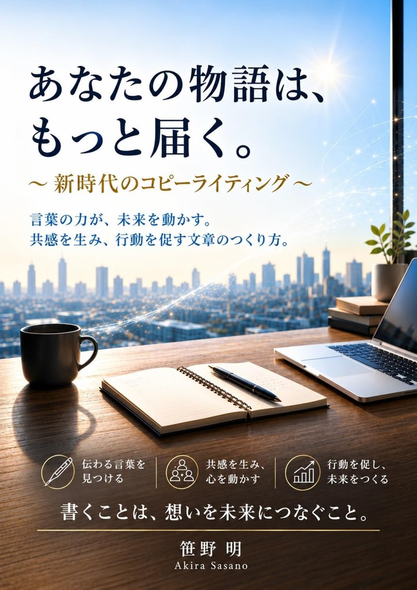

この2つの書き出し、あなたなら、どちらを読みたいですか？
おそらく、Bではないでしょうか。
伝えたい内容は、どちらも同じです。
違うのは、言葉の選び方だけ。
Aは、正しくて読みやすい。けれど、誰の顔も浮かんできません。
Bは、たった一人の、具体的な朝の情景から始まっています。
だからこそ、読んでいる人の記憶の中にある、似たような朝と重なり合うのです。
想いを込めて書いたのに、なぜか届かない。
そんな経験は、ありませんか？
その原因は、あなたの想いではなく、
ほんの少しの「言葉の選び方」にあるのかもしれません。
こんな心当たりは、ないでしょうか。
想いを込めて書いたのに、読まれた手応えがない。
「売り込みっぽい」と思われるのが怖くて、言いたいことを引っ込めてしまう。
AIに書かせると整うけれど、「悪くはない。でも、なんだか、これじゃない」。
自分の経験に、伝える価値があるのか分からない。
それは、あなたの経験や想いに、価値がないからではありません。
ただ、読者の言葉に「橋渡し」されていないだけなのです。
答えは、今の時代にあります。
文章を書くことが、かつてなく簡単になりました。
AIに頼めば、三秒後には、驚くほど整った文章が現れます。
ただ、AIの文章は、とても上手に「平均的」です。
角が取れていて、誰も傷つけず、誰の心にも大きく引っかかりません。
一方で、読者の注意力には限りがあります。
本書では、これを「可処分注意力」と呼んでいます。
最初の一文で、読者は「読み続けるか、離れるか」を決めてしまいます。
平均的な正しさよりも、具体的な一つの実感のほうが、結果として多くの人に届く。
この逆説が、本書全体を貫く考え方です。
言葉の技術を教える本は、これまでにもたくさんありました。
この一言を使えば、クリック率が上がる。この型に当てはめれば、読者は思わず反応してしまう。
それらは、間違ってはいません。
けれど、読者は今、煽られることに慣れてしまいました。
強い言葉ほど、疑われる時代が来ています。
言葉には、2つの使い方があります。
「読者は放っておけば動かない」が前提。限定で焦らせ、不安を煽り、外側から動かそうとする。
「あなたの中に、伝える価値がある」が前提。読者の言葉で語り、伝わらなさを埋めていく。
その言葉を、そしてその書き手を、もう一度信じたいとは思えない。
その書き手の言葉を、また読みたくなる。
読者は、動かす相手ではなく、
届ける相手です。
この本が大切にしているのは、「届けるための言葉」です。
読者を操作するのではなく、あなたと読者のあいだにある「伝わらなさ」を埋める。
本書では、これを「橋渡し」と呼んでいます。
足りないのは、才能でも、強い言葉でもありません。
あなたの中には、すでに伝える価値のある経験や、想いや、物語があります。
ただそれが、読者の言葉に橋渡しされていないだけです。
必要なのは、相手を操作する強い言葉ではありません。
あなたと読者をつなぐ、橋渡しの言葉です。
今度は、誰もが一度は書く「自己紹介文」です。
Beforeは、間違ってはいません。
けれど、具体的な情景も、感情の動きも、読者との接点もありません。
Afterは、「落ち込んだ夜」という一場面から始まり、そこからの転換が描かれています。
読者は「丁寧な仕事」という言葉よりも、この具体的な経緯に、書き手への信頼を感じます。
同じ経歴でも、言葉を少し変えるだけで、これだけ違って届きます。
あなたの文章も、生まれ変われるのです。
本書では、こうした書き換えを「転換点を探す → 具体的な感情を足す → 読者との接点を意識する」という手順で、ひとつずつ体感していきます。
この本の後半は、厳選した500の言い回しを集めた「フレーズ辞典」です。
冒頭で心をつかむ、共感を示す、物語に引き込む、背中を押す（煽らず）――
9つのカテゴリに分け、すべての語に、重要度と通し番号をつけました。
そんな経験はありませんか。
読者にも心当たりがありそうな「あるある」を、問いかけの形で差し出す語。
あの、○○という感覚。
名前のつけにくい感覚を、そのまま言葉にする語。
そんな時、○○が起きました。
停滞していた状況に、変化のきっかけが訪れたことを示す語。
今すぐでなくても、○○から始めてみませんか。
急かさず、読者のペースで始められることを示す語。
○○かもしれない、と思う方もいるでしょう。
起こりうる懸念を、否定せず、まず認める語。
この続きは、あなた自身の中にあります。
答えを与えきらず、読者自身の中に委ねる語。
読んで終わりではなく、書くたびに開いて使う一冊。
そのままコピー＆ペーストして使っても構いません。
書き出しで手が止まったとき、締めの一文に迷ったとき、あなたの手元にある辞典になります。
同じ言葉でも、置かれる場所によって、届き方は変わります。
内容を説明するより、読者の指を止める、具体的な一場面から始める。
読み終えたときに「読んでよかった」と思える、一貫した流れをつくる。
迷いを煽るのではなく、読者の不安に先回りして、言葉にしてあげる。
毎回の説得より、「この人の便りは、また読みたい」と思える信頼を重ねる。
第6章では、それぞれの場面での書き換え例とともに、場面を超えて変わらない「届ける言葉」の本質を紹介しています。
読者がまだ言葉にできていない「もったいなさ」を見つけ、「代わりに言ってくれた」と感じてもらえる言葉を選べるようになります。
転換点・具体的な感情・読者との接点。あなたの経験を、読者の心に残るストーリーに書き換えられます。
不安を煽るのではなく、読者の迷いに先回りして寄り添う。信頼されたまま、行動につながる言葉が書けます。
SNS・note・LP・メルマガ。それぞれの場所に合った言葉の置き方が分かります。
今も生きている型と、死語になりつつある型を見分け、自分の言葉で使いこなせるようになります。
知識が増えるだけでは、意味がありません。
大切なのは、あなたが次に書く一文が、どう変わるかです。
そして、いつか読者から、こんなふうに思ってもらえるはずです。
「この人の言葉は、
また読みたい」
第1部 理論編
第2部 フレーズ辞典編（500語）
伝えたいことは、ある。
でも、うまく言葉にできる自信がない。
だから、もう少し上手になってから――。
そうやって胸にしまっている想いは、きっと誰にでもあります。
けれど、届く文章は、上手になってから書くものではありません。
言葉を少し変えるところから、もう始められます。
だから、始めるのは「今」がいい。
そう言える理由が、4つあります。
煽る言葉に、読者はもう身構えています。誠実な「届ける言葉」に切り替えるほど、信頼が積み上がっていきます。
500のフレーズ辞典は、そのままコピーして使えます。今日の投稿の書き出しから、変えられます。
平均点の文章があふれるほど、具体的な一つの実感が、読者の目に留まります。
Kindle版 ¥780。Kindle Unlimited会員なら無料です。気になる章や、辞典の好きなカテゴリから開いても大丈夫です。
言葉が、ほんの少し違っていただけです。
それだけで、あなたの素晴らしいメッセージが届かないのは、
あまりにも、もったいない。
書くことは、想いを未来につなぐこと。
あなたの中にある物語は、すでにそこにあります。
あなたの物語を、
しっかりと届く形で、届けていきましょう。

言葉を少し変えるだけで、あなたの想いは、読者のもとへ深く届くようになります。
本書で、そのきっかけをつかんでいただけたら嬉しいです。
次にあなたが書く一文から、変わり始めます。